Robert Keenan
700 Knights Bridge Rd, Edmond, OK 73034
405-888-7879
Field records: September 30–October 5, 2026
Prepared by Christian Castillo · Report date: October 5, 2026
Requested HOA Action
Arrange immediate removal of
Tree 1 (T-202609301216):
advanced basal decay, substantial lean toward the residence,
and crown dieback. See 1.2.
Arrange prompt removal of suspended dead branches from
Tree 6 (T-202610011746).
Keep people out from beneath the affected crown until addressed.
See 6.2.
Coordinate mitigation for
Tree 9 (T-202610051527)
and selective pruning of
Tree 2 (T-202609301222).
Confirm greenbelt responsibility and authorize the appropriate work.
See 9.2 and 2.2.
Greenbelt locations are reported below; ownership and authorization
require confirmation. The south-side boundary oak is not a greenbelt tree.
Individual Tree Findings
Priorities indicate recommended action, not formal risk ratings.
Reference numbered findings, recommendations, and figures in correspondence.
1. Bur Oak — North Greenbelt
T-202609301216
Immediate removal
Mature, single stem · Approximately 10 m north of home
1.1 Finding:
Advanced basal decay, pronounced southward lean toward the home,
and significant crown dieback.
The home lies within the potential fall zone.
1.2 Recommendation:
Remove without delay. Avoid the potential fall zone pending removal.
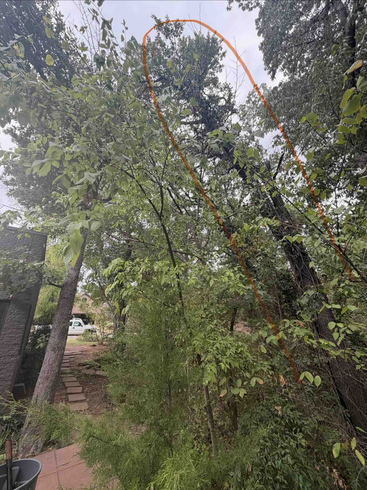
Figure 1A · Tree lean and relationship to residence.
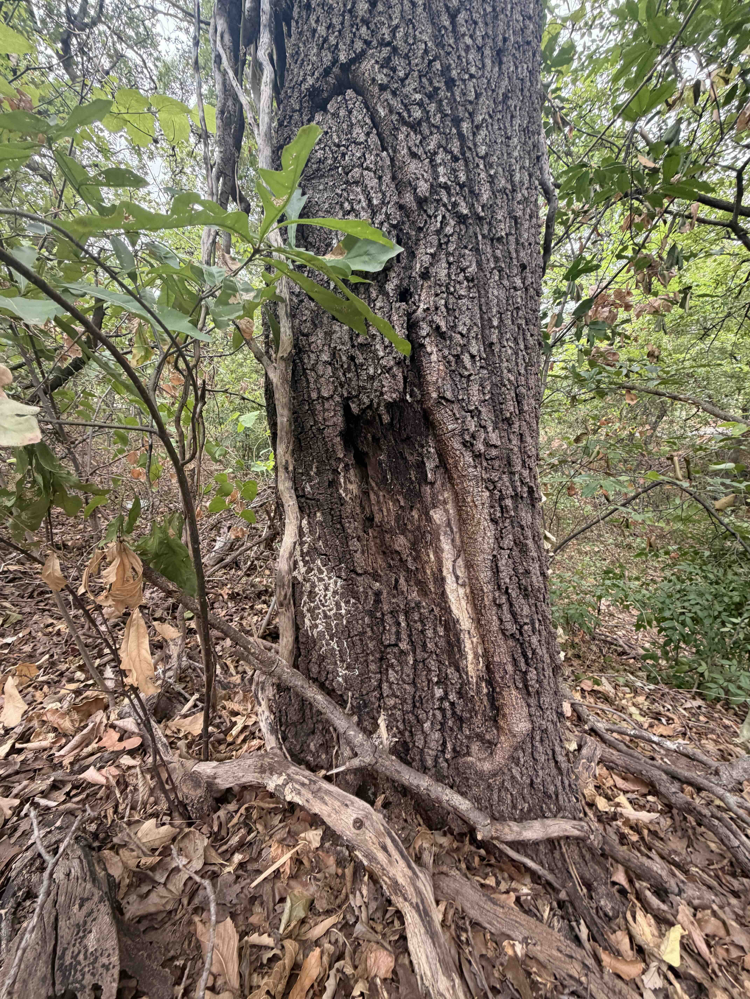
Figure 1B · Basal decay.
2. Bur Oak — North Greenbelt
T-202609301222
Selective reduction
Mature, three codominant stems · Approximately 15 m north of home
2.1 Finding:
Generally healthy crown, limited included bark at the main stem
unions, and no visible decay noted.
Substantial branches extend toward the house.
2.2 Recommendation:
Retain. Inspect the main unions and selectively reduce house-facing
branches to reduce leverage and improve clearance.
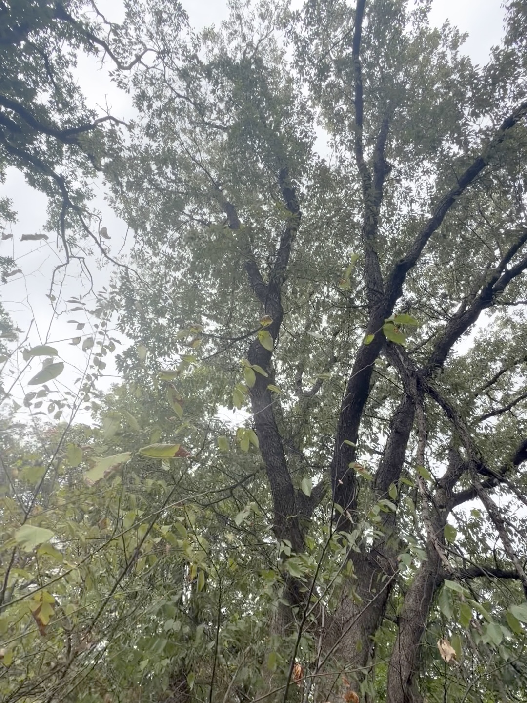
Figure 2A · House-facing branches.
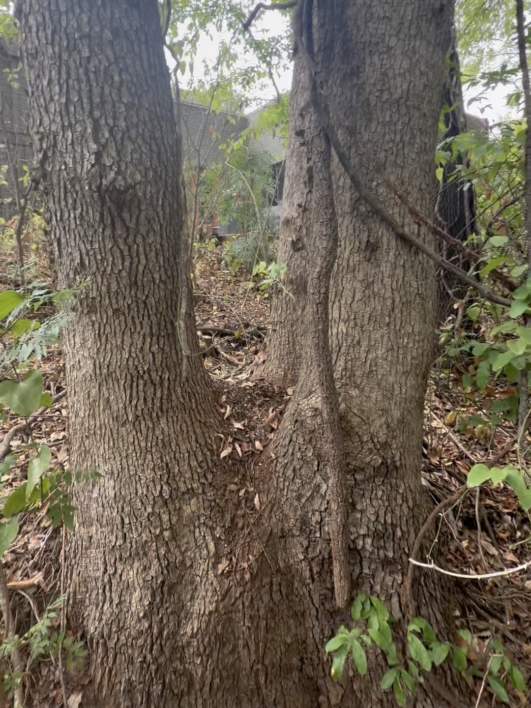
Figure 2B · Codominant stem unions.
3. Bur Oak — Rear Deck
T-202609301226
Examine and monitor
Mature, single stem · Approximately 2 m north of home · Homeowner property
3.1 Finding:
Lower-trunk groove or constriction scarring at deck height;
cause and internal condition are unknown.
Crown generally healthy, with peripheral dead branches.
3.2 Recommendation:
Examine and document the basal feature, establish a monitoring plan,
and address dead branches over the roof or occupied deck.
Further investigation may be needed.
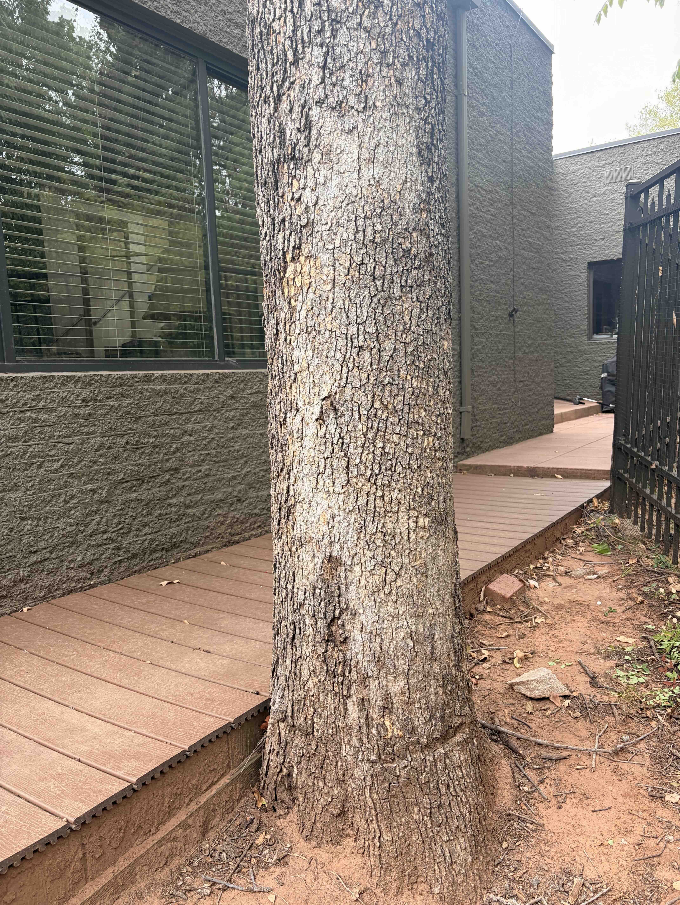
Figure 3A · Basal groove and deck interface.
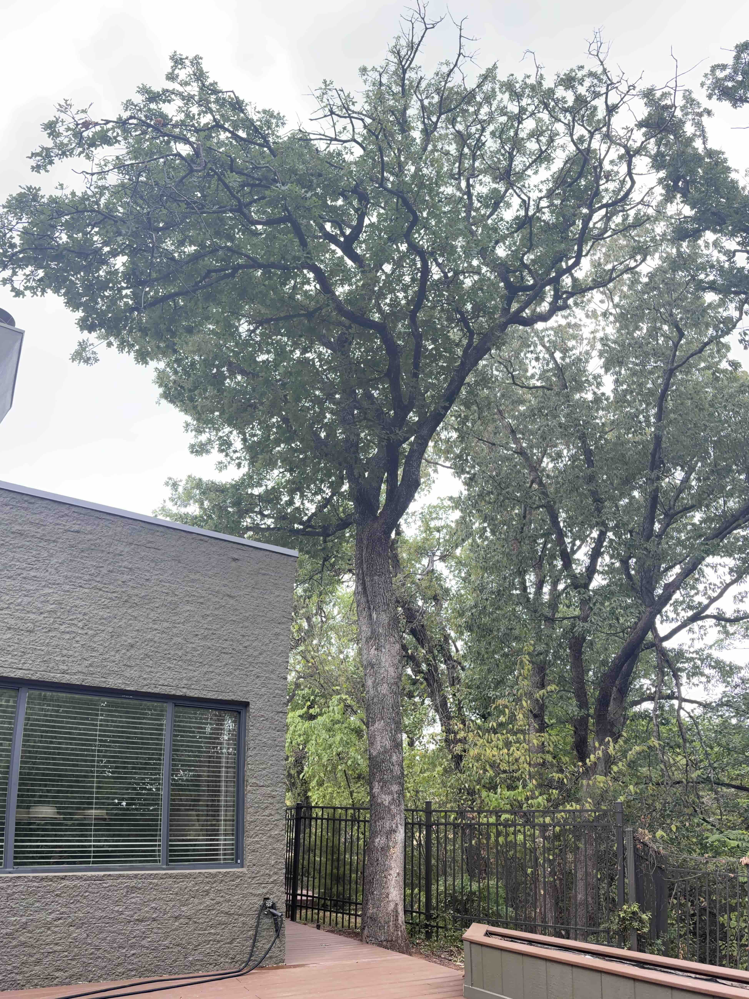
Figure 3B · Crown condition and nearby targets.
4. Bur Oak — South Property Boundary
T-202609301317
Union assessment / reduction
Mature, two codominant stems · Approximately 2 m south of home
Appears to straddle homeowner and neighboring property;
no greenbelt involvement
4.1 Finding:
Substantial included bark at the basal stem union raises concern
for stem separation. Crown vigorous; no significant visible decay noted.
4.2 Recommendation:
Coordinate with the neighboring owner. Examine the union and plan
conservative crown reduction to reduce leverage on the affected stems.
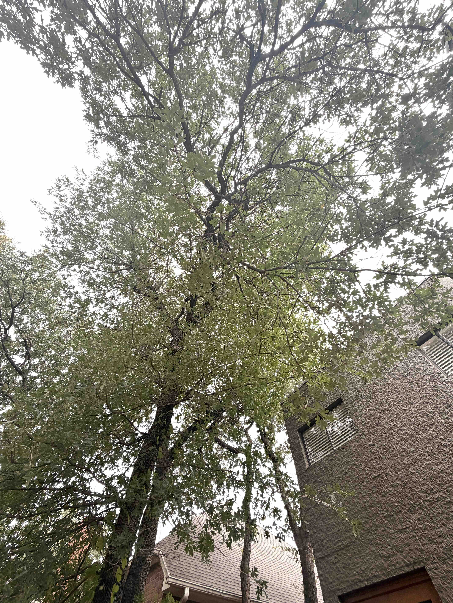
Figure 4A · Tree position and both stems.
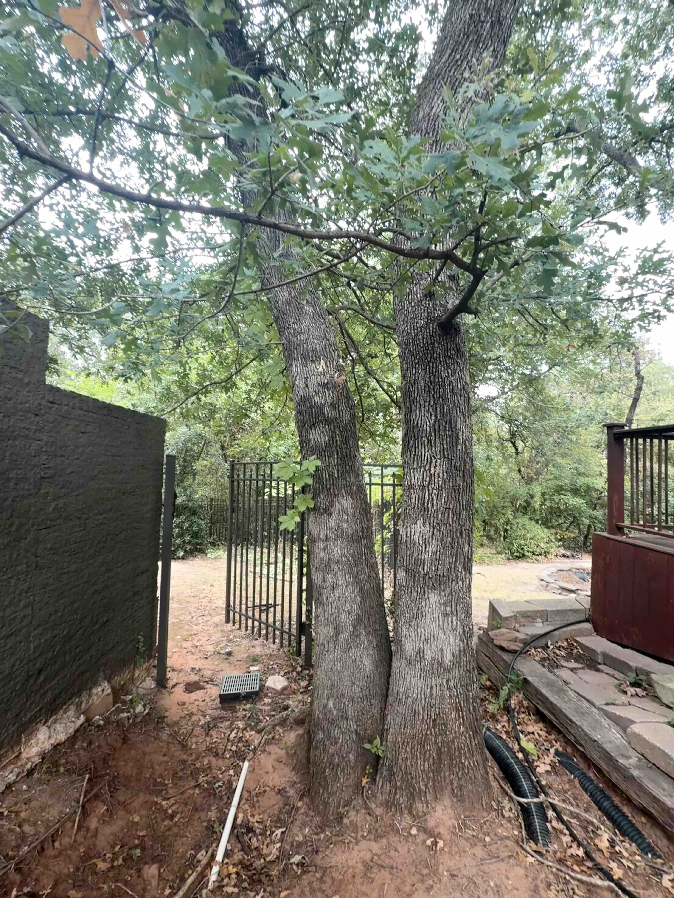
Figure 4B · Basal stem union.
5. Common Hackberry — East Fence
T-202610011738
Clearance completed
Young, dead · Base in greenbelt
5.1 Finding:
Dead sapling rested on the fence and was intertwined with a redbud.
5.2 Action completed:
Encroaching portions removed by Abundant Life Land & Tree LLC.
No further action recommended at this time; continue boundary monitoring.
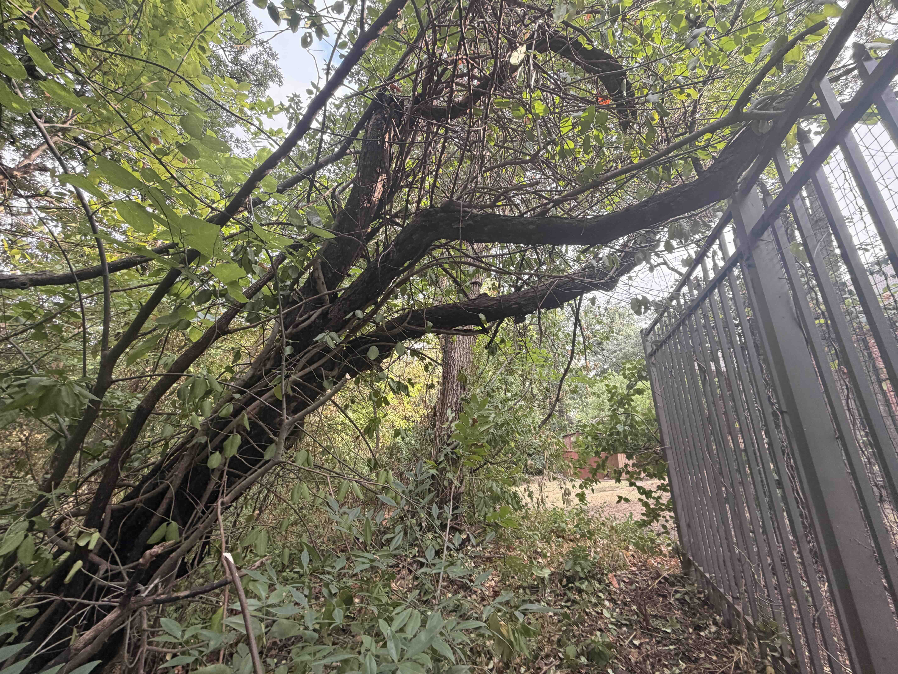
Figure 5A · Before fence clearance.
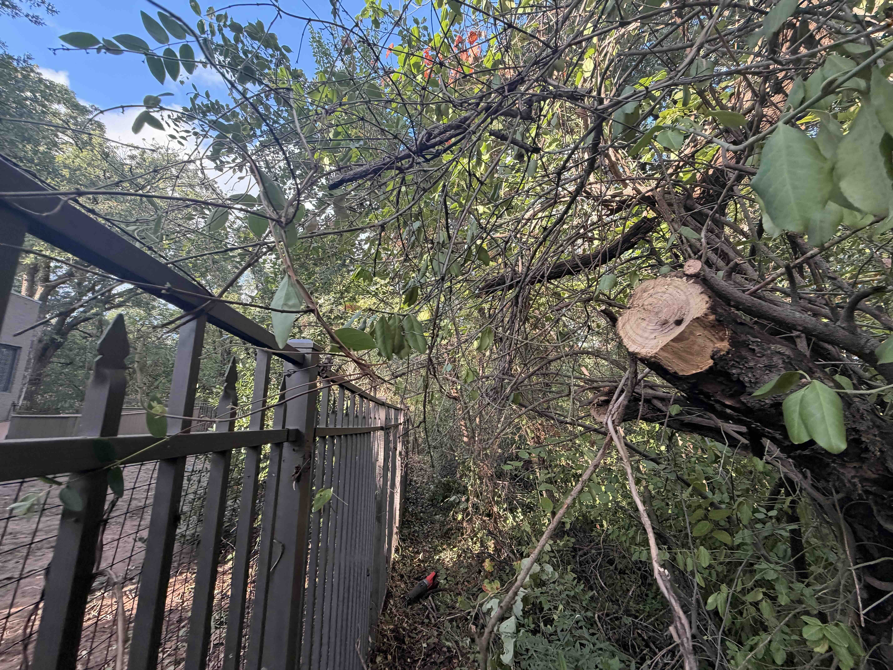
Figure 5B · Completed fence clearance.
6. Bur Oak — Spreading Greenbelt Tree
T-202610011746
Prompt deadwood removal
Mature, spreading crown · Base in greenbelt
6.1 Finding:
Dead branches lodged in the crown present an overhead falling-branch
hazard with potential for serious injury.
6.2 Recommendation:
Promptly remove suspended dead branches. Restrict access beneath
the affected crown until work is complete.
Whole-tree removal is not recommended by this finding.
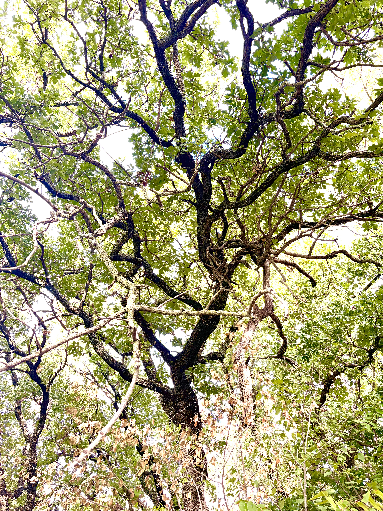
Figure 6A · Suspended dead branches.
7. Bur Oak — Greenbelt Overhang
T-202610011749
Routine vine management
Mature, single stem · Base in greenbelt
7.1 Finding:
Branches overhang the property and fence; dead vine foliage remains
in the crown. No specific structural defect recorded.
7.2 Recommendation:
Manage vine growth and remove accessible loose material without
damaging the tree. Review fence clearance; avoid pulling attached
vines from the crown.
8.2 Recommendation:
Retain and selectively prune for clearance while preserving
suitable crown structure.
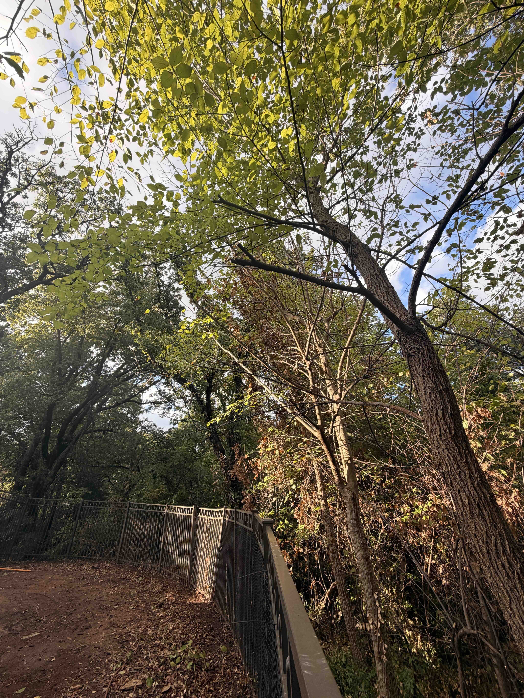
Figure 8A · Boundary encroachment.
9. Common Hackberry — Greenbelt Near Home
T-202610051527
Prompt mitigation decision
Mature, two codominant stems · Base in greenbelt
9.1 Finding:
Included bark at the basal stem union raises concern for stem
separation. Branches extend toward the home.
9.2 Recommendation:
Promptly assess the union and select either retention with targeted
reduction to reduce leverage or complete removal,
according to the defect’s severity.
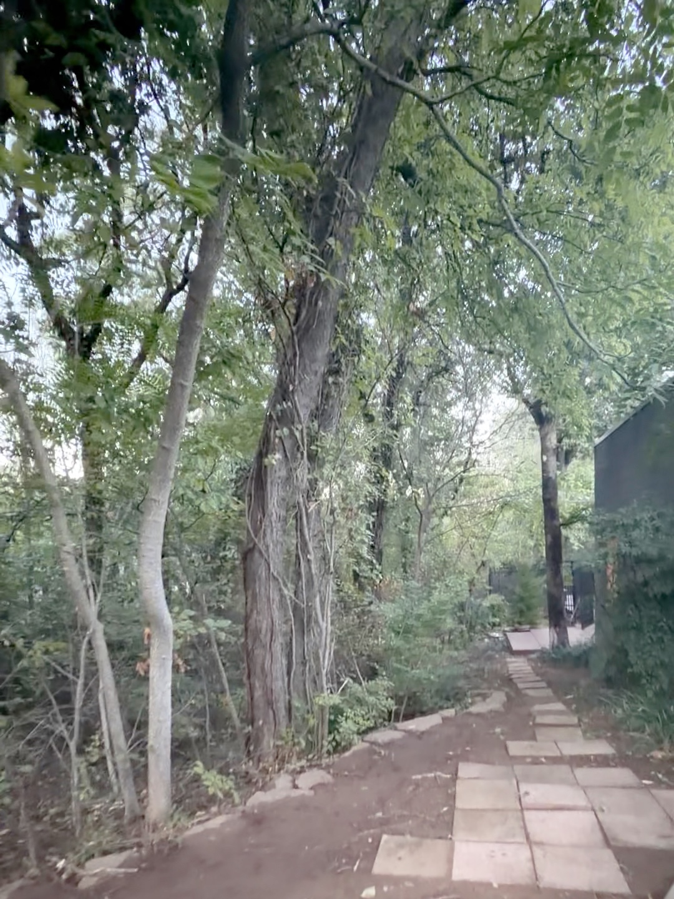
Figure 9A · Tree position and house-facing branches.
10. Ongoing Boundary Management
10.1
Selectively manage encroaching volunteer saplings to maintain
clearance and a recognizable property edge. Retain desirable
vegetation and confirm authorization for work in the greenbelt.